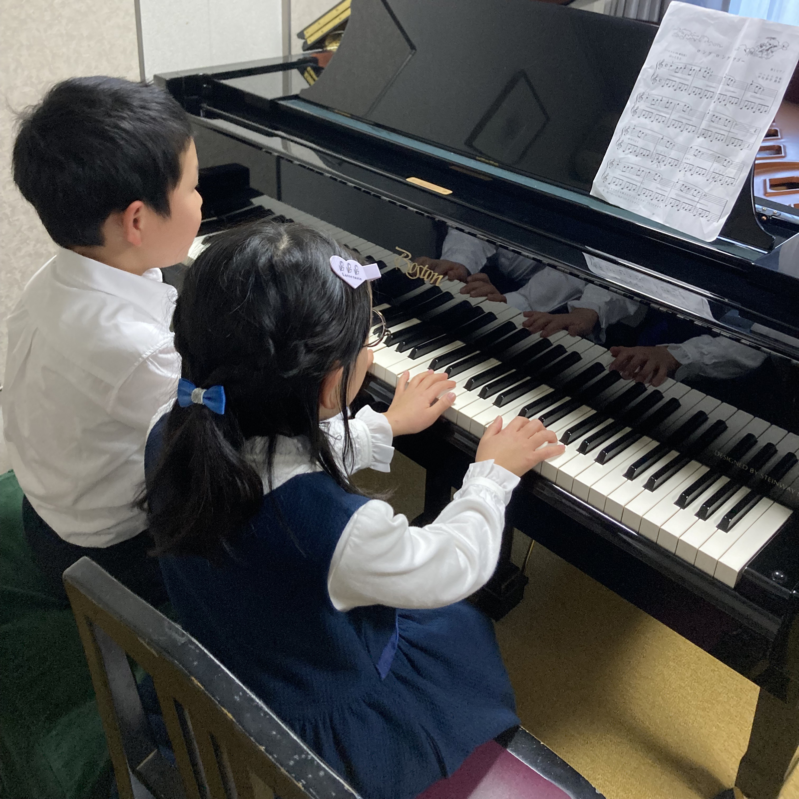
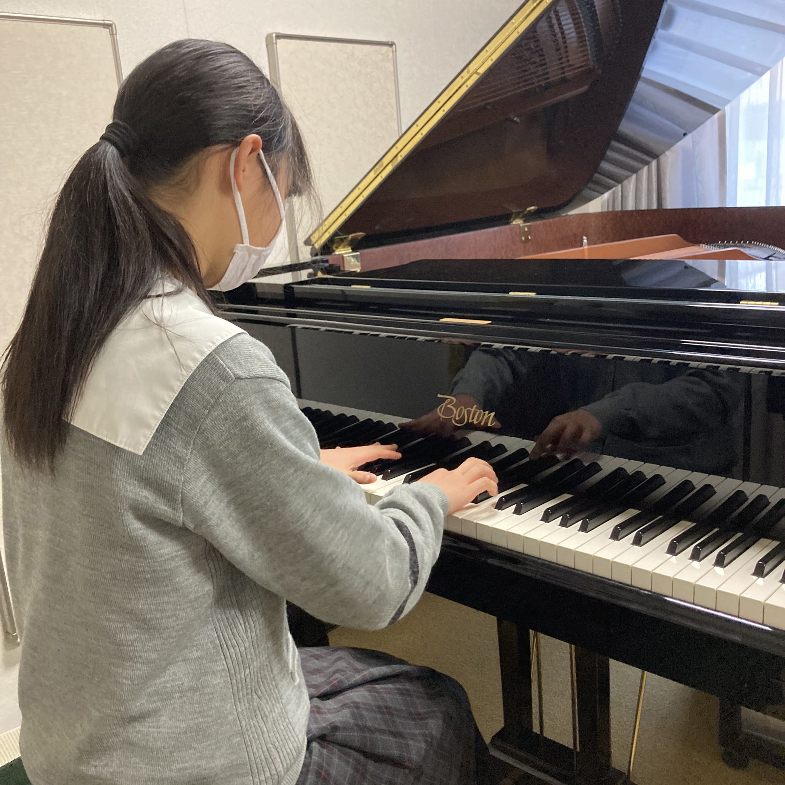
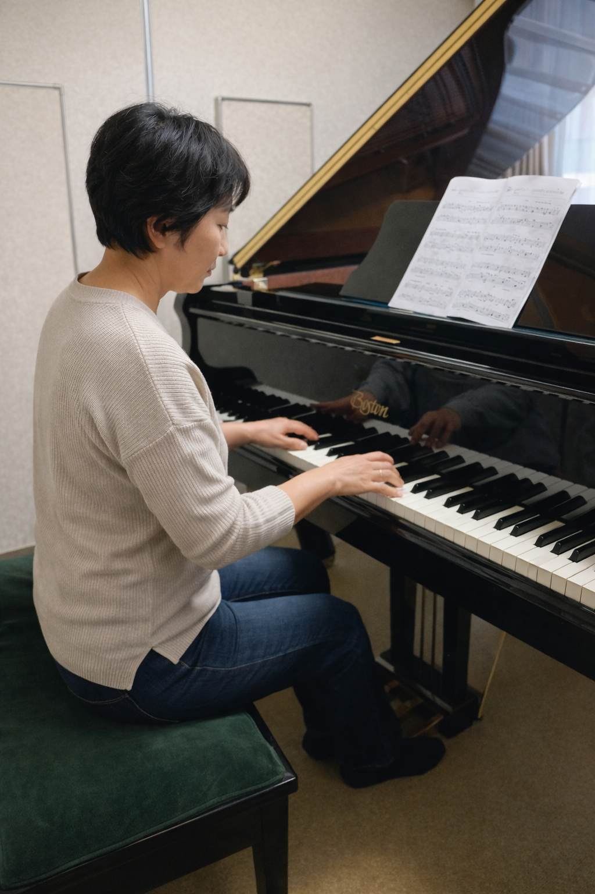

はじめてで不安
楽譜が読めなくても大丈夫。姿勢や指づかいから丁寧にお伝えします。
市川市八幡の個別ピアノレッスン
初心者から経験者まで、一人ひとりのペースに合わせて丁寧に指導。
子どもも大人も、楽しく続けながらしっかり上達できる教室です。
こんな方におすすめ
酒井ピアノ教室では、いきなり難しいことを求めません。
まずは音を出す楽しさを感じながら、
無理のないペースで基礎を身につけていきます。
楽譜が読めなくても大丈夫。姿勢や指づかいから丁寧にお伝えします。
一人ひとりの性格や成長に合わせて、楽しく取り組める内容に調整します。
再開したい気持ちを大切に、できるところから自信を取り戻せるレッスンです。

音楽を「楽しい！」
と感じる気持ちを大切にし、
音感・リズム感・集中力を自然に育てていきます。
優しく、丁寧に教えていきます。
［レッスン方法］
・カードやリズム遊びなども取り入れ、楽しみながら基礎を学ぶ
・両手奏や読譜を少しずつ無理なく導入
・短い曲を仕上げて達成感を積み重ねる
［目的］
ピアノを通して「自分で音楽をつくれる喜び」を知り、音楽の基礎をしっかり身につける。

よりピアノを弾くことの楽しさ、表現力を広げるためにワンランク上を目指す等、
一人一人の希望にそったレッスン
［レッスン方法］
・基礎練習を継続しつつ、好きな曲や憧れの曲に挑戦
・表現力を高めるため、フレーズの歌い方やペダルワークを丁寧に指導
・希望があればソルフェージュや楽典も組み合わせ
［目的］
技術の向上とともに、音楽を通して「自己表現の力」を育てる。受験や舞台を目指す生徒には実践的な準備を。

日々の生活に「心の豊かさ」をプラスできる時間として、 無理なく続けられるレッスンを大切にします。
［レッスン方法］
・「好きな曲を1曲仕上げる」など具体的な小さな目標を設定
・経験に応じてクラシック・ポピュラー・ジャズなど幅広いジャンルを選択可能
・指や身体に負担をかけないフォームを意識した指導
［目的］
音楽を趣味として楽しみ、日常に癒しや達成感を取り入れること。演奏を通して交流や自己実現の機会を広げる。
選ばれる理由
年齢や経験、目標に合わせてレッスン内容を調整。はじめての方も無理なく続けられます。
小さなお子さまの導入から、大人の再開レッスンまで幅広く対応しています。
「できた」を積み重ねて自己肯定感につなげながら、基礎力も表現力も育てます。
講師紹介
武蔵野音楽大学ピアノ科卒業。基礎から表現まで丁寧に寄り添い、
生徒さんそれぞれの個性を大切にしたレッスンを心がけています。
はじめてピアノに触れるお子さまから、
もう一度弾きたい大人の方まで、
「音楽って楽しい」と感じられる時間づくりを
大切にしています。
FAQ
はい。楽譜の読み方や鍵盤の位置から、
無理なく丁寧に進めていきます。
もちろんです。年齢や性格に合わせて、楽しみながら学べる内容をご提案します。
大丈夫です。ブランクのある方や趣味で始めたい方にも対応しています。